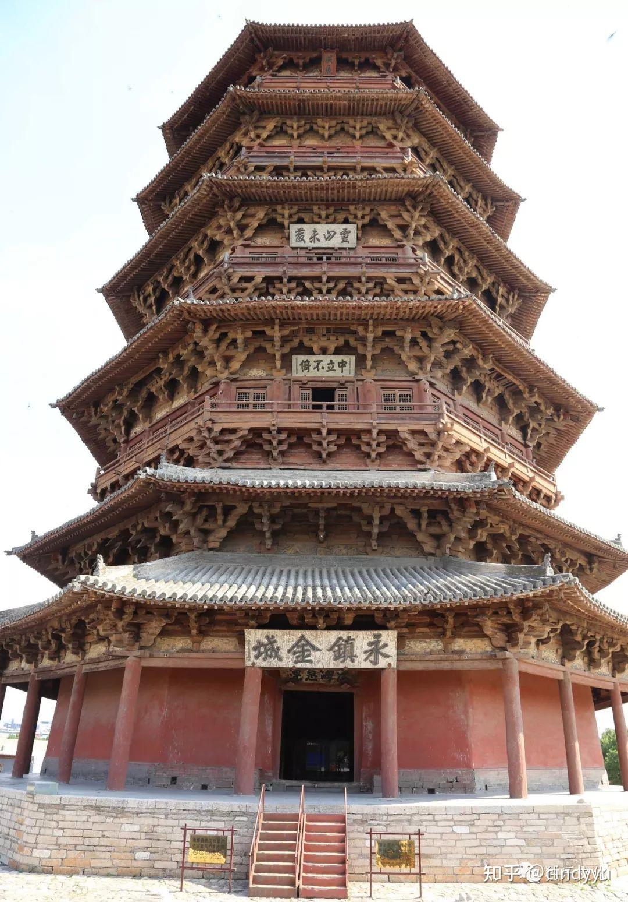

世界现存最高最古老的木构塔 · 全塔无钉无铆 · 辽代木构建筑之巅峰

佛宫寺释迦塔 · 辽清宁二年（1056年）建
应县木塔全称佛宫寺释迦塔，坐落于山西省朔州市应县县城西北佛宫寺内，建于辽清宁二年（公元1056年），由辽兴宗之子道宗皇帝下令建造，距今已有近970年的历史，是世界上现存最高、最古老的纯木构楼阁式塔。
塔为平面八角形，外观五层六檐，内部实为九层（含四个暗层），通高67.31米，底层直径30.27米。整塔全部以木材构筑，无一铁钉，依靠2000余个形状各异的榫卯构件拼接而成，历经近千年多次战争与地震，仍岿然不动，被誉为"天下第一塔"。
外观五层六檐，内部实为九层结构（5明4暗）。暗层虽不对外开窗，但承担斜撑传力的关键结构功能，是整塔抗震体系的核心所在。
塔的平面为正八角形，底层直径30.27米，内外两圈柱网构成双筒结构。八角形平面使各方向的受力更均匀，能有效分散风荷载与地震力，是辽代木构建筑对结构稳定性深刻认识的体现。外圈24根柱，内圈8根柱，两圈之间形成回廊，可供信众绕塔礼佛。
全塔共使用54种形制、共计480余朵斗拱，是中国古建筑中斗拱种类最多的单体建筑之一。每朵斗拱均为榫卯咬合，层层出跳，既承担传递荷载的结构功能，又是建筑立面的核心装饰构件，外观精美繁复，被学界称为"斗拱博物馆"。
四个暗层内设有大量斜向支撑木构件，形成三角形桁架体系，将水平地震力有效传导至基础。明暗层交替的设计使塔体既有足够的层高展示宗教空间，又具备极强的整体刚度，这是古代工匠在无现代力学理论指导下，以实践经验总结出的抗震结构智慧。
底部设石砌须弥座台基，高4米，分为上下两重，雕刻精美。塔顶以铁刹收尾，刹高9.91米，由仰莲、宝珠、相轮十三重、宝盖、圆光、仰月、宝珠叠置而成，刹尖直刺苍穹，为整塔画上点睛之笔，彰显佛教宇宙观中须弥山的象征意义。
整塔从基础到刹顶，全部木构件仅靠榫卯连接，不用一颗铁钉。榫卯连接具有一定的转动自由度，在地震荷载下可通过构件之间的微小相对位移消耗能量，表现出类似现代"消能减震"装置的特性。这种柔性结构使木塔在强震下"摇而不倒"，是古代工匠对木材材性深刻理解的结晶。
内外两圈柱网构成"双筒"结构体系，内筒承担竖向荷载，外筒承担水平荷载（风力、地震）。两圈柱之间以梁枋、斗拱相连，形成空间刚架。这一结构原理与现代高层建筑的"框筒"结构有异曲同工之妙，是辽代木构力学智慧的集中体现。
抗震数据：
据史料记载，应县木塔自建成以来经历了数十次大大小小的地震，其中包括1626年山西大地震（推算约7级），塔体震而不倒；近现代监测显示塔身已有1.98度整体北倾，但结构未见崩溃性破坏。
塔内各层均供奉佛像，底层正中为一尊高11米的释迦牟尼坐像，是辽代彩塑的精品。各层梁枋上绘有辽代壁画，内容以佛教故事、飞天、供养人为主，色彩虽历经近千年仍部分清晰可辨，是研究辽代绘画艺术的珍贵实物资料。
「 未登应县塔，不见北国天 」
— 民间谚语 · 世界最高古木塔